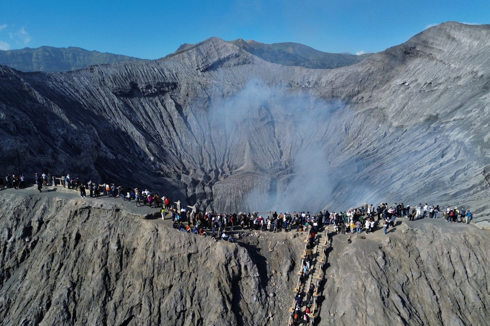
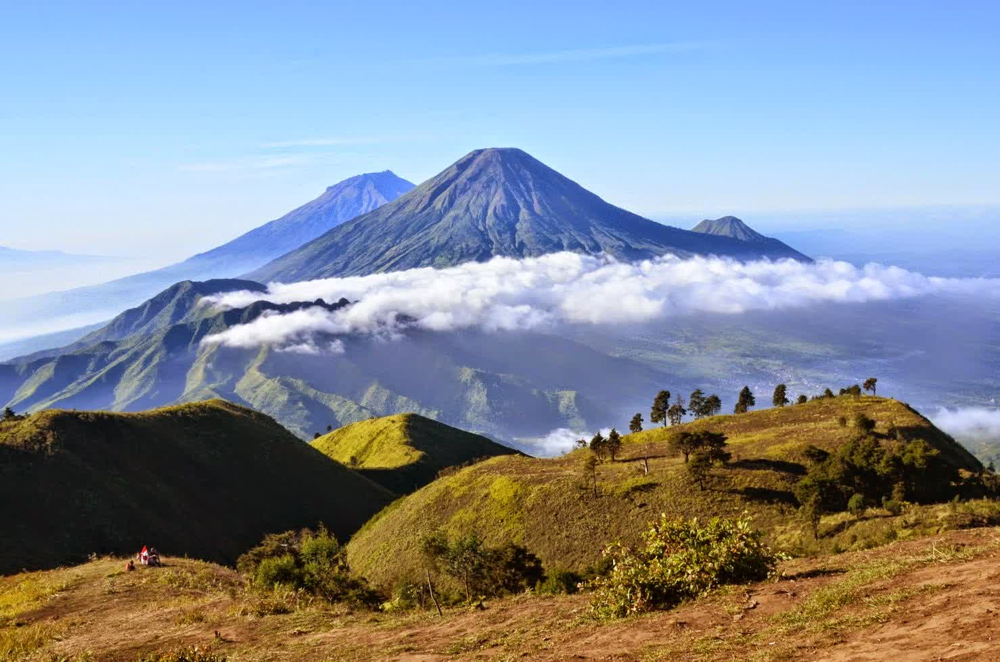
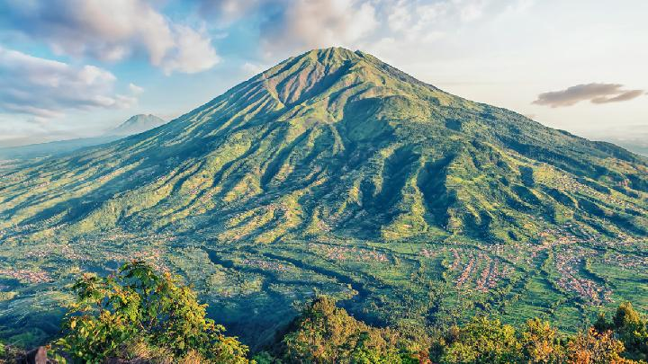
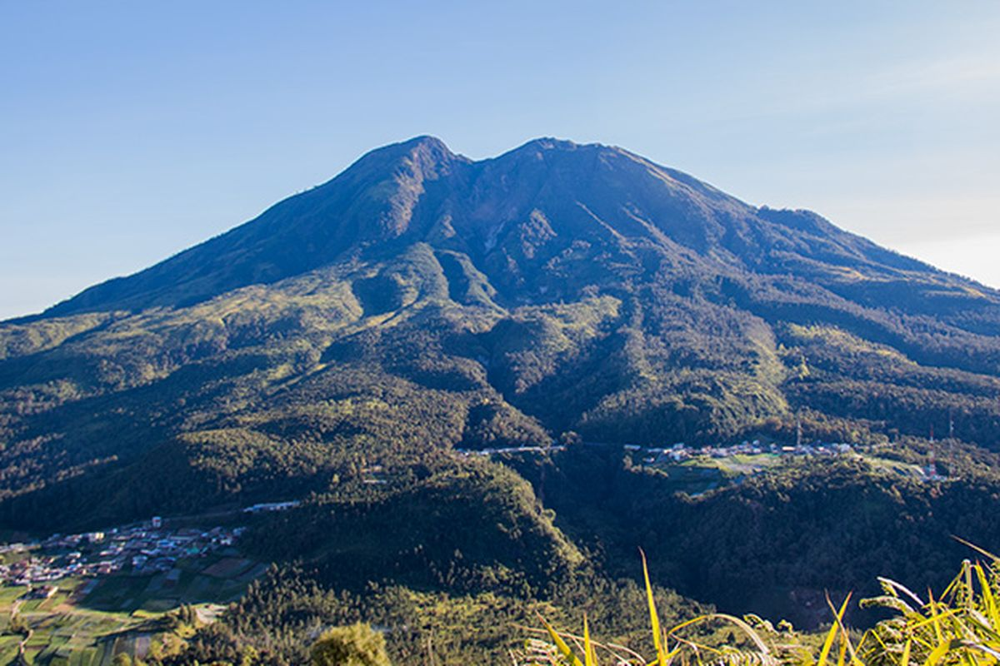
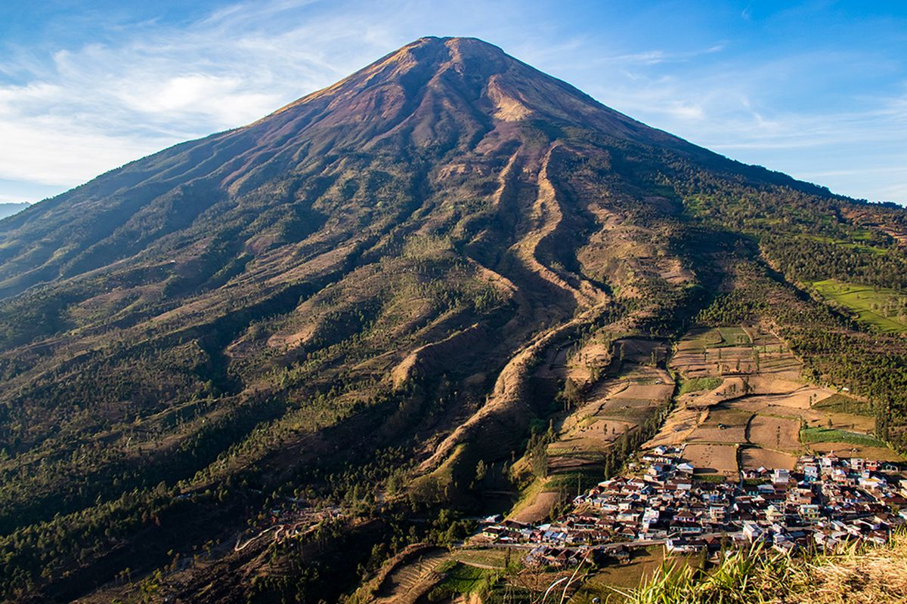
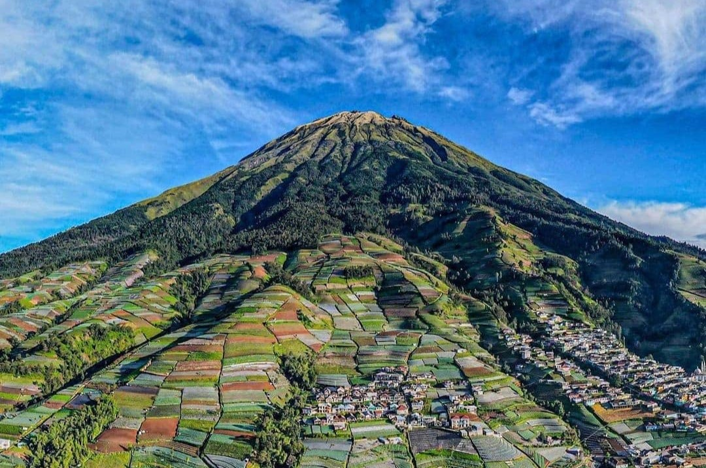
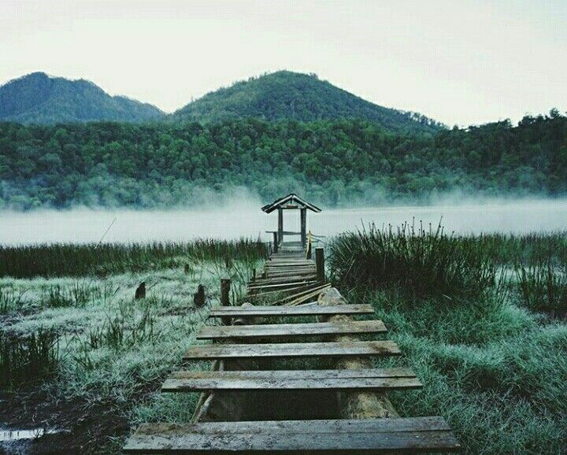
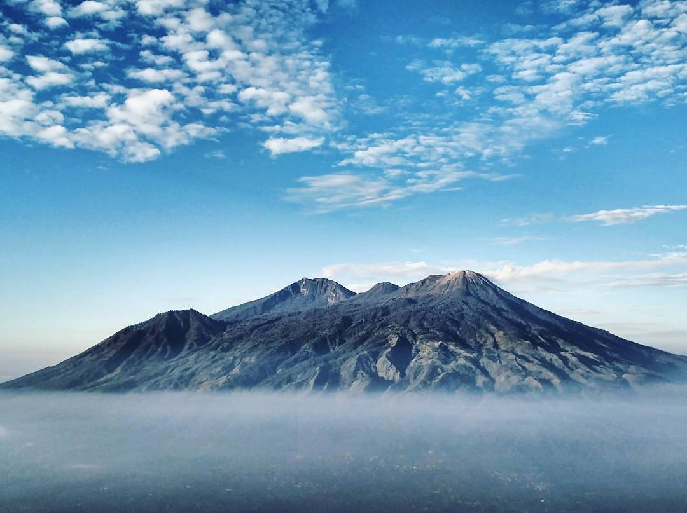
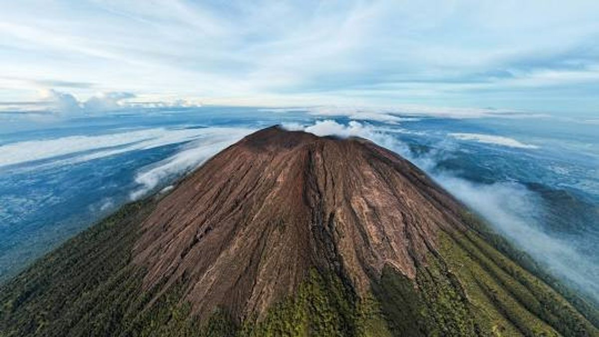

Gunung Pilihan
di Pulau Jawa
Dari kawah aktif Semeru hingga misteri Gunung Lawu, kami menawarkan pengalaman pendakian dengan panduan berpengalaman, perlengkapan lengkap, dan keselamatan yang terjamin.

Atap Pulau Jawa. Mahameru — destinasi impian setiap pendaki. Jalur legendaris Ranu Pani dengan kawah Jonggring Saloko yang memukau.
Gunung berapi teraktif di Indonesia. Panorama matahari terbit dari puncak menjadi pengalaman spiritual yang tak terlupakan.

Ikon wisata Jawa Timur. Lautan pasir, kawah belerang, dan panorama matahari terbit yang melegenda. Cocok untuk pemula.

>Gunung dengan panorama bintang dan sunrise terbaik di Jawa Tengah. Trek pendek namun pemandangan negeri di atas awan yang memukau.

Padang savana luas dan bunga edelweis. Trekking melewati jalur hijau yang menyegarkan dengan pemandangan Merapi di selatan.

Gunung penuh nilai sejarah dan spiritual. Warung Mbok Yem di puncak menjadi spot ikonik. Trek dengan nuansa mistis yang menawan.

Si kembar Sumbing yang gagah. Puncak datar berupa kawah lebar dengan pemandangan 360° mencakup Sumbing, Merapi, dan lautan awan Wonosobo.

Gunung tertinggi ketiga di Jawa. Trek yang terjal dan menantang, jalur Bowongso melewati sabana luas dengan pemandangan bintang yang spektakuler.

Trek terpanjang di Jawa — 6 hingga 8 hari. Hutan hujan tropis, padang edelweis luas, situs pura kuno, dan habitat Merak Hijau Jawa yang langka.

Puncak paling ekstrem di Jawa dengan kaldera aktif berdiameter 2 km. Pendakian teknis meniti punggungan sempit menuju bibir kawah yang membara.

Gunung suci penuh legenda Majapahit. Kompleks Arjuno-Welirang menawarkan dua puncak menakjubkan, savana luas, dan padang edelweis di ketinggian. Jalur via Purwosari terdapat situs peninggalan Kerajaan Majapahit dalam jalurnya.

Gunung tertinggi di Jawa Tengah dan tertinggi kedua di Jawa. Stratovolkano aktif dengan kawah raksasa. Jalur via Guci menembus hutan yang selalu menjadi ikonik.